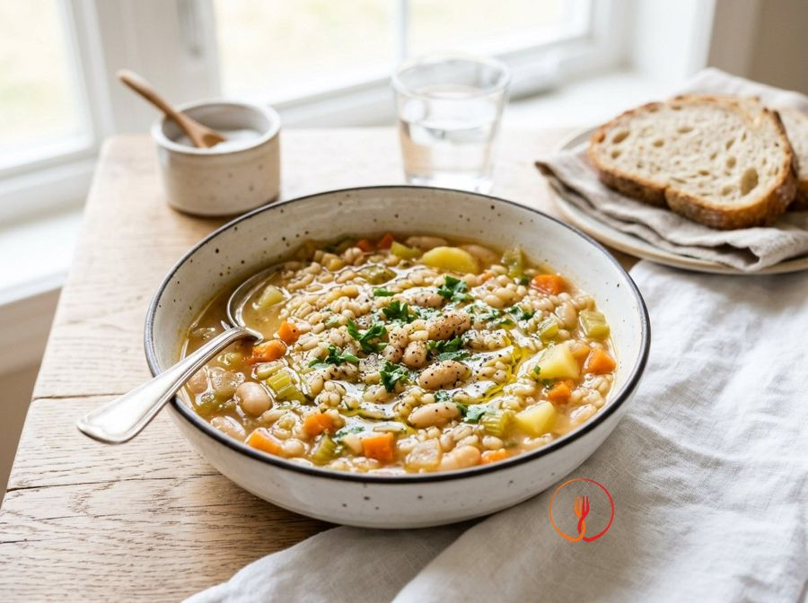

Minestra di orzo e verdure
Un primo piatto nutriente e saziante che unisce la fibra dell'orzo perlato alle proteine vegetali dei legumi. Questa preparazione economica sfrutta le verdure di base della dieta mediterranea per un pasto equilibrato e riscaldante.
Ingredienti
- Orzo perlato240 g
- Fagioli cannellini lessati240 g
- Carote150 g
- Sedano100 g
- Cipolla dorata100 g
- Patate200 g
- Bietole fresche200 g
- Acqua o brodo vegetale1500 ml
- Olio extravergine d'oliva40 ml
- Sale iodato5 g
- Rosmarino fresco1 pz
Allergeni
Glutine, Sedano
Procedimento
- Lavare accuratamente l'orzo perlato sotto acqua corrente fredda utilizzando un colino a maglie strette per eliminare le impurità e l'eccesso di amido finché l'acqua non risulta limpida.
- Preparare un trito regolare (brunoise) con carota, sedano e cipolla; scaldare 20 ml di olio extravergine in una pentola capiente e stufare le verdure a fuoco basso per circa 7 minuti finché la cipolla non diventa trasparente.
- Pelare la patata e tagliarla a cubetti di circa 1 cm, aggiungendola al soffritto insieme al rametto di rosmarino intero per sprigionare gli oli essenziali senza disperdere gli aghi.
- Versare l'orzo scolato nella pentola e lasciarlo tostare per 2 minuti mescolando continuamente, tecnica che permette al cereale di mantenere una consistenza piacevole al morso dopo la cottura.
- Aggiungere l'acqua o il brodo vegetale già caldo, salare moderatamente e portare a bollore; una volta raggiunto il bollore, abbassare la fiamma e coprire parzialmente con un coperchio.
- Proseguire la cottura per 25-30 minuti, verificando la consistenza dell'orzo: deve risultare tenero ma elastico, mentre le patate inizieranno a sfaldarsi creando una naturale cremosità.
- Unire i fagioli cannellini (precedentemente sciacquati dal liquido di governo) e le bietole tagliate a striscioline, cuocendo per altri 5 minuti affinché i sapori si integrino e la verdura fogliare appassisca dolcemente.
- Spegnere il fuoco, rimuovere il rametto di rosmarino e lasciare riposare la minestra coperta per 3-5 minuti per stabilizzare le temperature e armonizzare il profilo aromatico.
- Impiattare la minestra in fondine individuali e completare ogni porzione con 5 ml di olio extravergine d'oliva a crudo e, se gradito, un pizzico di pepe nero macinato fresco.
Valori nutrizionali (stima)
| Per porzione (694 g) | Per 100 g | |
|---|---|---|
| Energia | 1611 kJ / 385.0 kcal | 232.1 kJ / 55.5 kcal |
| Proteine | 14.0 g | 2.0 g |
| Carboidrati | 62.0 g | 8.9 g |
| di cui zuccheri | – g | – g |
| Grassi | 11.0 g | 1.6 g |
| di cui saturi | – g | – g |
| Fibre | – g | – g |
| Sale | – g | – g |
Valori stimati con l'AI su dati medi CREA / USDA: sono indicativi e non sostituiscono il parere di un medico o di un nutrizionista.
Apri la ricetta nell'app per la lista della spesa, le schede ingredienti e i negozi vicini.